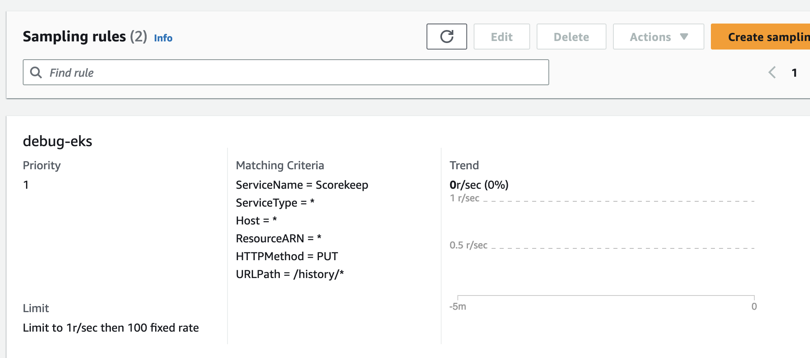

成本優化 - 可觀測性¶
簡介¶
可觀測性工具可幫助您有效地檢測、修復和調查您的工作負載。隨著您使用 EKS 的增加,遙測數據的成本自然會增加。有時,平衡您的運營需求和衡量對您的業務很重要的事情,同時保持可觀測性成本在可控範圍內,可能會很有挑戰性。本指南重點關注成本優化策略,涉及可觀測性的三個支柱:日誌、指標和追蹤。這些最佳實踐中的每一個都可以獨立應用,以符合您組織的優化目標。
日誌¶
日誌在監控和排查集群中應用程序方面發揮著關鍵作用。有幾種策略可用於優化日誌成本。下面列出的最佳實踐策略包括檢查您的日誌保留策略,以實施對日誌數據保留時間的細粒度控制,根據重要性將日誌數據發送到不同的存儲選項,以及利用日誌過濾來縮小存儲的日誌消息類型。有效管理日誌遙測可以為您的環境帶來成本節省。
EKS 控制平面¶
優化您的控制平面日誌¶
Kubernetes 控制平面是一組組件管理集群,這些組件將不同類型的信息作為日誌流發送到 Amazon CloudWatch 中的日誌組。雖然啟用所有控制平面日誌類型有好處,但您應該了解每個日誌中的信息以及存儲所有日誌遙測的相關成本。您將被收取將日誌從集群發送到 Amazon CloudWatch Logs 的標準 CloudWatch Logs 數據引入和存儲成本。在啟用它們之前,請評估每個日誌流是否必要。
例如,在非生產集群中,只選擇性地啟用特定的日誌類型,如 api 服務器日誌,僅用於分析,然後停用。但對於生產集群,您可能無法重現事件,解決問題需要更多日誌信息,那麼您可以啟用所有日誌類型。有關更多控制平面成本優化實施細節,請參考此博客。
將日誌流式傳輸到 S3¶
另一個成本優化最佳實踐是通過 CloudWatch Logs 訂閱將控制平面日誌流式傳輸到 S3。利用 CloudWatch Logs 訂閱允許您選擇性地將日誌轉發到 S3,這提供了比無限期保留日誌在 CloudWatch 中更具成本效益的長期存儲。例如,對於生產集群,您可以創建一個關鍵日誌組,並利用訂閱在 15 天後將這些日誌流式傳輸到 S3。這將確保您可以快速訪問日誌以進行分析,同時也通過將日誌移動到更具成本效益的存儲來節省成本。
Attention
截至 2023 年 9 月 5 日,EKS 日誌在 Amazon CloudWatch Logs 中被歸類為供應商日誌。供應商日誌是由 AWS 服務代表客戶本地發佈的特定 AWS 服務日誌,並以批量折扣定價提供。請訪問 Amazon CloudWatch 定價頁面了解更多關於供應商日誌定價的信息。
EKS 數據平面¶
日誌保留¶
Amazon CloudWatch 的默認保留策略是無限期保留日誌,永不過期,並產生適用於您的 AWS 區域的存儲成本。為了減少存儲成本,您可以根據工作負載需求自定義每個日誌組的保留策略。
在開發環境中,長時間的保留期可能不是必要的。但在生產環境中,您可以設置更長的保留策略,以滿足故障排查、合規性和容量規劃的要求。例如,如果您在節假日旺季運行電子商務應用程序,系統負載會更重,可能會出現問題,您將需要設置更長的日誌保留期,以進行詳細的故障排查和事後分析。
您可以在 AWS CloudWatch 控制台或 AWS API 中配置您的保留期,持續時間從 1 天到 10 年不等,具體取決於每個日誌組。具有靈活的保留期可以節省日誌存儲成本,同時也保留了關鍵日誌。
日誌存儲選項¶
存儲是觀測性成本的一大驅動因素,因此優化您的日誌存儲策略至關重要。您的策略應該與您的工作負載要求保持一致,同時保持性能和可擴展性。減少存儲日誌成本的一種策略是利用 AWS S3 存儲桶及其不同的存儲層。
直接將日誌轉發到 S3¶
考慮將不太重要的日誌(如開發環境)直接轉發到 S3,而不是 Cloudwatch。這可以立即影響日誌存儲成本。一種選擇是使用 Fluentbit 直接將日誌轉發到 S3。您在 [OUTPUT] 部分定義這一點,這是 FluentBit 傳輸容器日誌以供保留的目的地。查看此處的其他配置參數。
[OUTPUT]
Name eks_to_s3
Match application.*
bucket $S3_BUCKET name
region us-east-2
store_dir /var/log/fluentbit
total_file_size 30M
upload_timeout 3m
僅將日誌轉發到 CloudWatch 進行短期分析¶
對於更關鍵的日誌,例如生產環境,您可能需要立即分析數據,請考慮將日誌轉發到 CloudWatch。您在 [OUTPUT] 部分定義這一點,這是 FluentBit 傳輸容器日誌以供保留的目的地。查看此處的其他配置參數。
[OUTPUT]
Name eks_to_cloudwatch_logs
Match application.*
region us-east-2
log_group_name fluent-bit-cloudwatch
log_stream_prefix from-fluent-bit-
auto_create_group On
但這不會立即影響您的成本節省。要獲得更多節省,您將不得不將這些日誌導出到 Amazon S3。
從 CloudWatch 導出到 Amazon S3¶
為了長期存儲 Amazon CloudWatch 日誌,我們建議將您的 Amazon EKS CloudWatch 日誌導出到 Amazon Simple Storage Service (Amazon S3)。您可以通過控制台或 API 創建一個導出任務,將日誌轉發到 Amazon S3 存儲桶。這樣做後,Amazon S3 提供了許多選項來進一步降低成本。您可以定義自己的 Amazon S3 生命週期規則將您的日誌移動到符合您需求的存儲類別,或利用 Amazon S3 Intelligent-Tiering 存儲類別,讓 AWS 根據您的使用模式自動將數據移動到長期存儲。更多詳情請參考此博客。例如,對於您的生產環境日誌,在 CloudWatch 中保留超過 30 天後,將其導出到 Amazon S3 存儲桶。然後,如果您需要在稍後的時間查看日誌,可以使用 Amazon Athena 查詢 Amazon S3 存儲桶中的數據。
減少日誌級別¶
為您的應用程序實踐選擇性日誌記錄。您的應用程序和節點默認輸出日誌。對於您的應用程序日誌,請調整日誌級別以與工作負載和環境的重要性保持一致。例如,下面的 java 應用程序正在輸出 INFO 日誌,這是典型的默認應用程序配置,根據代碼可能會產生大量日誌數據。
import org.apache.log4j.*;
public class LogClass {
private static org.apache.log4j.Logger log = Logger.getLogger(LogClass.class);
public static void main(String[] args) {
log.setLevel(Level.INFO);
log.debug("This is a DEBUG message, check this out!");
log.info("This is an INFO message, nothing to see here!");
log.warn("This is a WARN message, investigate this!");
log.error("This is an ERROR message, check this out!");
log.fatal("This is a FATAL message, investigate this!");
}
}
在開發環境中,將日誌級別更改為 DEBUG,因為這可以幫助您調試問題或在它們進入生產環境之前捕捉潛在問題。
在生產環境中,請考慮將日誌級別修改為 ERROR 或 FATAL。這將只在您的應用程序出現錯誤時輸出日誌,從而減少日誌輸出並幫助您關注有關應用程序狀態的重要數據。
您可以微調各種 Kubernetes 組件的日誌級別。例如,如果您使用 Bottlerocket 作為 EKS 節點操作系統,有一些配置設置允許您調整 kubelet 進程的日誌級別。下面是這種配置設置的一個片段。請注意 kubelet 進程的默認日誌級別為 2,它調整了日誌詳細程度。
[settings.kubernetes]
log-level = "2"
image-gc-high-threshold-percent = "85"
image-gc-low-threshold-percent = "80"
對於開發環境,您可以將日誌級別設置為大於 2 的值,以查看更多事件,這對於調試很有用。對於生產環境,您可以將級別設置為 0,以僅查看關鍵事件。
利用過濾器¶
當使用默認的 EKS Fluentbit 配置將容器日誌發送到 Cloudwatch 時,FluentBit 會捕獲並發送 ALL 應用程序容器日誌,並使用 Kubernetes 元數據對其進行enrichment,如下面的 [INPUT] 配置塊所示。
[INPUT]
Name tail
Tag application.*
Exclude_Path /var/log/containers/cloudwatch-agent*, /var/log/containers/fluent-bit*, /var/log/containers/aws-node*, /var/log/containers/kube-proxy*
Path /var/log/containers/*.log
Docker_Mode On
Docker_Mode_Flush 5
Docker_Mode_Parser container_firstline
Parser docker
DB /var/fluent-bit/state/flb_container.db
Mem_Buf_Limit 50MB
Skip_Long_Lines On
Refresh_Interval 10
Rotate_Wait 30
storage.type filesystem
Read_from_Head ${READ_FROM_HEAD}
上面的 [INPUT] 部分正在攝取所有容器日誌。這可能會產生大量可能不必要的數據。過濾掉這些數據可以減少發送到 CloudWatch 的日誌數據量,從而降低成本。您可以在日誌輸出到 CloudWatch 之前對其應用過濾器。Fluentbit 在 [FILTER] 部分定義這一點。例如,過濾掉附加到日誌事件的 Kubernetes 元數據可以減少您的日誌量。
[FILTER]
Name nest
Match application.*
Operation lift
Nested_under kubernetes
Add_prefix Kube.
[FILTER]
Name modify
Match application.*
Remove Kube.<Metadata_1>
Remove Kube.<Metadata_2>
Remove Kube.<Metadata_3>
[FILTER]
Name nest
Match application.*
Operation nest
Wildcard Kube.*
Nested_under kubernetes
Remove_prefix Kube.
指標¶
指標提供有關系統性能的寶貴信息。通過將所有系統相關或可用資源指標集中在一個中心位置,您可以獲得比較和分析性能數據的能力。這種集中式方法使您能夠做出更明智的戰略決策,如擴展或縮減資源。此外,指標在評估資源健康狀況方面發揮關鍵作用,允許您在必要時採取主動措施。通常,可觀測性成本隨遙測數據收集和保留而增加。以下是一些您可以實施的成本降低策略:只收集重要的指標,減少遙測數據的基數,並微調遙測數據收集的粒度。
監控重要的指標並只收集您需要的¶
第一個成本降低策略是減少您正在收集的指標數量,從而降低保留成本。
- 首先,從您和/或您的利益相關方的要求出發,確定最重要的指標。成功指標因人而異!知道什麼是好,並據此進行測量。
- 考慮深入研究您正在支持的工作負載,並確定其關鍵績效指標(KPI)a.k.a'黃金信號'。這些應該與業務和利益相關方的要求保持一致。使用 Amazon CloudWatch 和指標數學計算 SLI、SLO 和 SLA 對於管理服務可靠性至關重要。遵循此指南中概述的最佳實踐,有效監控和維護您的 EKS 環境的性能。
- 然後繼續通過基礎架構的不同層面,連接和相關EKS 集群、節點和其他基礎架構指標與您的工作負載 KPI。將您的業務指標和運營指標存儲在一個您可以將它們相關起來並根據觀察到的影響得出結論的系統中。
- EKS 公開了來自控制平面、集群 kube-state-metrics、pod 和節點的指標。所有這些指標的相關性取決於您的需求,但您可能不需要跨不同層面的每個單一指標。您可以使用此EKS 基本指標指南作為監控 EKS 集群和您的工作負載整體健康狀況的基線。
以下是一個 prometheus 抓取配置示例,我們使用 relabel_config 只保留 kubelet 指標,並使用 metric_relabel_config 丟棄所有容器指標。
kubernetes_sd_configs:
- role: endpoints
namespaces:
names:
- kube-system
bearer_token_file: /var/run/secrets/kubernetes.io/serviceaccount/token
tls_config:
insecure_skip_verify: true
relabel_configs:
- source_labels: [__meta_kubernetes_service_label_k8s_app]
regex: kubelet
action: keep
metric_relabel_configs:
- source_labels: [__name__]
regex: container_(network_tcp_usage_total|network_udp_usage_total|tasks_state|cpu_load_average_10s)
action: drop
在適用的地方減少基數¶
基數指的是特定指標集的數據值的唯一性,以及它的維度(例如 prometheus 標籤)。高基數指標具有許多維度,每個維度指標組合都具有更高的唯一性。較高的基數會導致更大的指標遙測數據大小和存儲需求,從而增加成本。
在下面的高基數示例中,我們看到指標 Latency 具有維度 RequestID、CustomerID 和 Service,每個維度都有許多唯一值。基數是每個維度可能值的組合數量的度量。在 Prometheus 中,每組唯一的維度/標籤都被視為一個新的指標,因此高基數意味著更多指標。

在具有許多指標和每個指標維度/標籤(集群、命名空間、服務、pod、容器等)的 EKS 環境中,基數往往會增長。為了優化成本,請仔細考慮您正在收集的指標的基數。例如,如果您正在為可視化而在集群級別聚合特定指標,那麼您可以丟棄較低層級的標籤,如命名空間標籤。
為了在 prometheus 中識別高基數指標,您可以運行以下 PROMQL 查詢來確定哪些抓取目標具有最高的指標數量(基數):
以下 PROMQL 查詢可以幫助您確定哪些抓取目標具有最高的指標變化(在給定的抓取中創建了多少新的指標系列)率:
如果您使用 grafana,您可以使用 Grafana Lab 的 Mimirtool 分析您的 grafana 儀表板和 prometheus 規則,以識別未使用的高基數指標。按照此指南中的說明使用 mimirtool analyze 和 mimirtool analyze prometheus 命令來識別您的儀表板中未引用的活動指標。
考慮指標粒度¶
每秒收集指標與每分鐘收集指標相比,可能會對收集和存儲的遙測量產生很大影響,從而增加成本。確定合理的抓取或指標收集間隔,在足夠的粒度以查看瞬態問題和足夠低的成本效率之間取得平衡。減少用於容量規劃和較長時間窗口分析的指標的粒度。
以下是 AWS 開源版 OpenTelemetry (ADOT) EKS 插件收集器配置的一個片段。
Attention
全局 prometheus 抓取間隔設置為 15 秒。這個抓取間隔可以增加,從而減少在 prometheus 中收集的指標數據量。
apiVersion: opentelemetry.io/v1alpha1
kind: OpenTelemetryCollector
metadata:
name: my-collector-amp
...
config: |
extensions:
sigv4auth:
region: "<YOUR_AWS_REGION>"
service: "aps"
receivers:
#
# Scrape configuration for the Prometheus Receiver
# This is the same configuration used when Prometheus is installed using the community Helm chart
#
prometheus:
config:
global:
scrape_interval: 15s
scrape_timeout: 10s
追蹤¶
與追蹤相關的主要成本源自追蹤存儲生成。通過追蹤,目標是收集足夠的數據來診斷和理解性能方面的問題。但是,由於 X-Ray 追蹤成本基於轉發到 X-Ray 的數據,在數據轉發後刪除追蹤不會降低您的成本。讓我們檢討一下如何在保持數據以進行適當分析的同時降低追蹤成本。
應用採樣規則¶
X-Ray 採樣率默認較為保守。定義採樣規則,您可以控制收集的數據量。這將提高性能效率,同時降低成本。通過降低採樣率,您可以只收集工作負載需要的請求跟蹤,同時保持較低的成本結構。
例如,您有一個 java 應用程序,您想調試一個有問題的路由的所有請求的跟蹤。
通過 SDK 配置從 JSON 文件加載採樣規則
{
"version": 2,
"rules": [
{
"description": "debug-eks",
"host": "*",
"http_method": "PUT",
"url_path": "/history/*",
"fixed_target": 0,
"rate": 1,
"service_type": "debug-eks"
}
],
"default": {
"fixed_target": 1,
"rate": 0.1
}
}
通過控制台

應用 AWS Distro for OpenTelemetry (ADOT) 的尾部採樣¶
ADOT 尾部採樣允許您控制進入服務的追蹤量。但是,尾部採樣允許您在請求中的所有 span 完成後定義採樣策略,而不是在開始時。這進一步限制了轉發到 CloudWatch 的原始數據量,從而降低成本。
例如,如果您對登陸頁面的流量採樣 1%,對支付頁面的請求採樣 10%,這可能會在 30 分鐘的時間內留下 300 個追蹤。使用 ADOT 尾部採樣規則過濾特定錯誤,您可能只剩下 200 個追蹤,這減少了存儲的追蹤數量。
processors:
groupbytrace:
wait_duration: 10s
num_traces: 300
tail_sampling:
decision_wait: 1s # This value should be smaller than wait_duration
policies:
- ..... # Applicable policies**
batch/tracesampling:
timeout: 0s # No need to wait more since this will happen in previous processors
send_batch_max_size: 8196 # This will still allow us to limit the size of the batches sent to subsequent exporters
service:
pipelines:
traces/tailsampling:
receivers: [otlp]
processors: [groupbytrace, tail_sampling, batch/tracesampling]
exporters: [awsxray]
利用 Amazon S3 存儲選項¶
您應該利用 AWS S3 存儲桶及其不同的存儲類別來存儲追蹤。在保留期到期之前,將追蹤導出到 S3。使用 Amazon S3 生命週期規則將追蹤數據移動到符合您要求的存儲類別。
例如,如果您有 90 天前的追蹤,Amazon S3 Intelligent-Tiering可以根據您的使用模式自動將數據移動到長期存儲。您可以使用 Amazon Athena查詢 Amazon S3 中的數據,如果您需要稍後參考追蹤。這可以進一步降低您的分佈式追蹤成本。